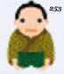
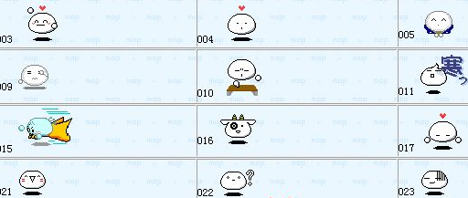
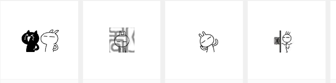
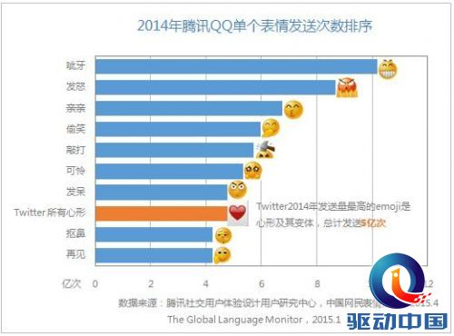

中国表情包浑沌发展
874 / 253
能够知道这两个数字代表的表情的人，一般现在都25-35岁了，必定也知道露小缝，猥琐神教和芙蓉姐姐的崛起。
874你哦
本人253
这是猫扑论坛当红时代的两个最受欢迎的表情。874是编号为874的一个女生扫把打猥琐男的gif表情，253号表情就是一个跪拜的武士，就跟现在的1024差不多。
猫扑的小包子表情
论坛表情是中国使用复杂表情的第一阵地，当时的qq表情还只有默认的页。论坛表情开始引进部分日本韩国的gif表情，如小包子系列，后期也有原创的小兵，兔斯基表情。这类表情丰富了人们在网络交流情感的表达方法，不少人有此变成了第一批表情党，所以才会有后期论坛规定回复字数或者禁止纯表情灌水的规则。
兔斯基，作者是个相当年轻的女生 王卯卯
QQ表情符号普及甚广，使用远超国外竞品
早期论坛的表情很多人会用贴图的方式在qq上使用，这说明聊天默认表情已经无法满足人民群众日益增长的逗比诉求了，于是出现了各种的自定义表情，不过千万不要看不起默认表情栏第一页的黄色小圆圈们。2014年QQ全年表情发送量超过5338亿次，默认表情占据了前十的地位，加起来超过50亿次的发送。随着群组模式的壮大，QQ增加了表情漫游，表情编辑，表情导入导出功能，这让中国的表情事业发展一下泛滥到了无法控制的地步。
虽然有各种值得诟病的地方，但是在表情包的发展历史中，腾讯具有里程碑的标志性作用，无论是表情的制作还是传播，都是以QQ和微信为平台，在少则三人，多则上千的qq群中以病毒性的姿态传播。
根据腾讯《中国网民表情报告》，2014年QQ全年表情发送量超过5338亿次，8亿QQ用户中，超过90%在聊天时使用过表情。在移动互联网时代表情贴纸在即时通讯产品中的使用更为频繁，它允许用户以语言文字之外的方式进行沟通。QQ表情的价值也在新形势下更为凸显，成为了区别于国外同类竞品，更懂中国网民语境和情绪的特色壁垒，并持续助力增值业务营收。
以上数据对比表明，QQ表情在用户发送量上超过了国际领先的社交媒体竞品，除了QQ整体用户基数作为保证之外，QQ表情符号自身的特色更是突出，对巨大的发送量起到了明显的加成作用。
QQ表情符号扎根本土，抵抗国外竞品挑战
根据腾讯QQ表情商城大数据统计，2014年QQ单个表情发送量最多的前五名依次是是“呲牙”、“发怒”、“亲亲”、“偷笑”、“敲打”，而同样来自Global Language Monitor对Twitter的研究显示，Twitter上发送前五的表情分别是“Heart”、“Joy”、“Unamused”、“Heart Eyes”和“Relax”。
从用户发送量上对比，腾讯QQ表情远远超过Twitter，而更大的差异在于国内和国外用户对表情使用上的区别。其中最重要的差异是，中国用户对“爱”和“Love”的表达更为含蓄，因此较少的出现用“心形”表情，而国外用户将“爱”更多的直接表达，因此对“心形”及其变体的依赖就较高。同时中国用户在朋友间亲密关系的最高状态是“损友”，因此在感情表达上，用“发怒”、“敲打”、“抠鼻”甚至是“拖出去斩了”这种本土戏谑风格明显的表情则使用较多，在表情符号的使用上与国外用户有明显的差异。

作为国内表情市场中的鼻祖，QQ表情还构建了庞大的生态体系，包括经典表情、大表情、魔法表情、自定义表情都可以在QQ平台上流通。表情生态系统的建立进一步丰富了QQ表情的源头，使得表情创意能够“无死角”的反映中国互联网的热点以及中国网民的关注焦点，并且众包式的创意团队将创意实现的时间变为“瞬时”，由此构建了更坚实的竞争壁垒。这使得QQ在与PC时代的MSN、移动时代的Whatsapp、LINE、Kakao Talk等国外产品的竞争中占据了有利地位。